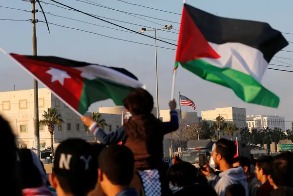

Gaza Now
Home
About Us
الأردنيون يواصلون الوقفات التضامنية مع أهل غزة

انطلقت مسيرة في وسط البلد في العاصمة عمان، اليوم الجمعة عقب انتهاء صلاة الجمعة دعما للمقاومة الفلسطينية في قطاع غزة والضفة الغربية. ورفع المشاركون في المسيرة التي انطلقت من أمام المسجد الحسيني، العلمين الأردني والفلسطيني، بالإضافة إلى علم جنوب افريقيا. وجاءت المسيرة بتنظيم من الملتقى الوطني لدعم المقاومة وحماية الوطن وائتلاف الأحزاب اليسارية والقومية، بالإضافة إلى فعاليات شبابية وشعبية. وحملت المسيرة عنوان، "لا تهجير… صمود ومقاومة حتى التحرير والعودة"، في ظل استمرار العدوان الإسرائيلي على القطاع والإبادة التي ترتكبها تل أبيب بحق الشعب الفلسطيني التي تقترب من 100 يوم.الأردنيون يواصلون الوقفات التضامنية مع الأهل في غزة احتشد أردنيون عقب صلاة الجمعة، في مسيرات ووقفات تضامنية نصرة للمقاومة الفلسطينية ودعمًا للأهل في غزة، وتنديدا بعدوان الاحتلال في القطاع، تزامنا مع مثول تل أبيب أمام المحكمة الدولية، فيما يواصل الاحتلال عدوانه وسط الحصار الكامل المفروض على القطاع